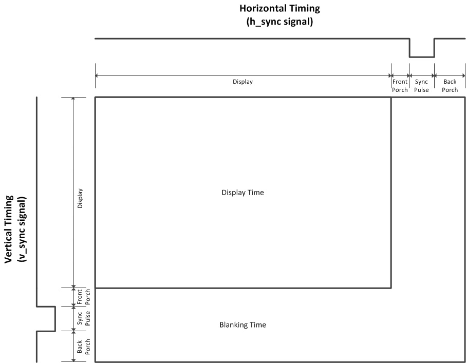
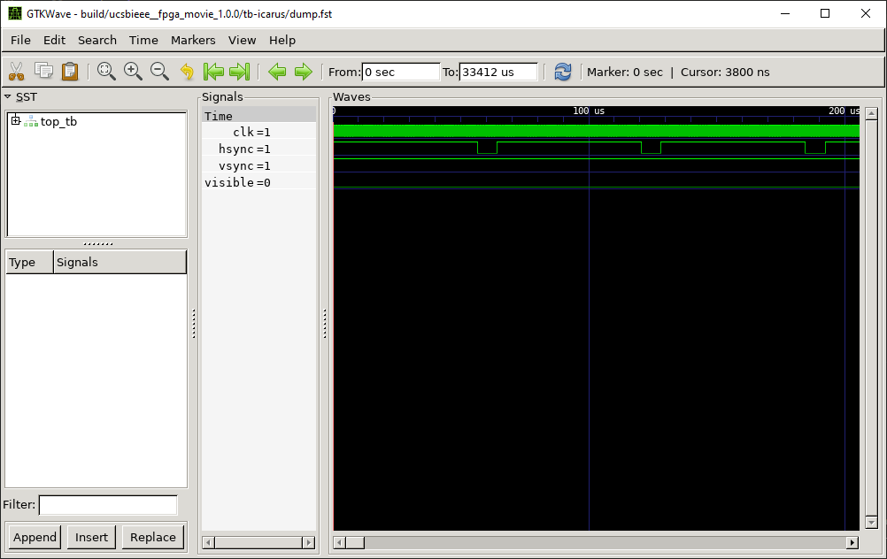
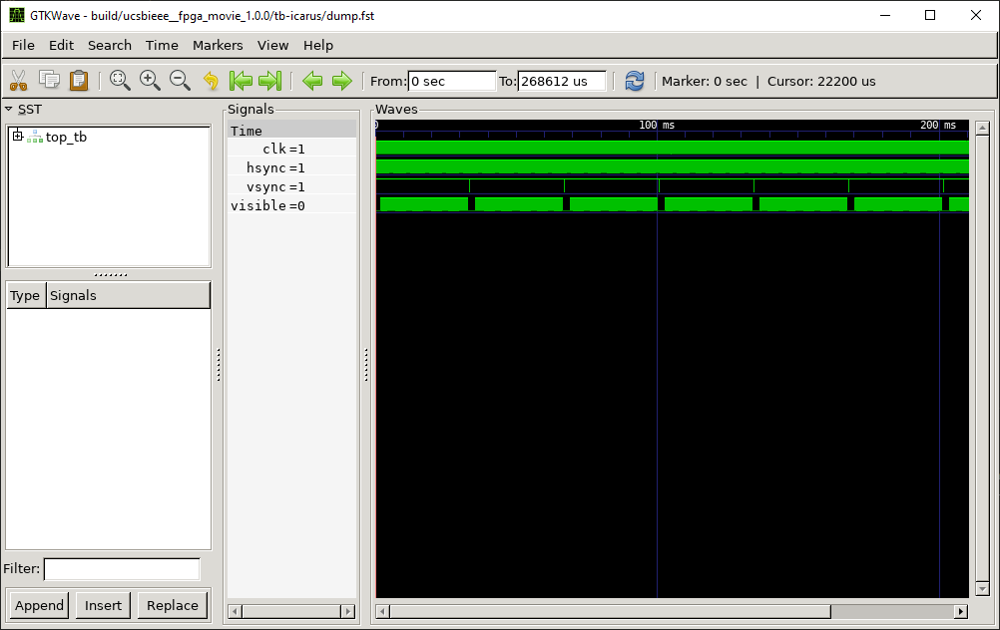
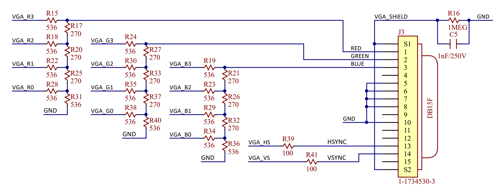

Video Graphics Array (VGA) is a 35 year old analog video interface. It is the most simple video interface to implement, which makes it perfect for students/hobbyists.
It works by drawing each pixel row by row. After drawing a row, it waits for the horizonal sync wire to go low. After finishing the entire frame, it waits for a vertical sync wire to go low. Observe this timing diagram:
The length of the visible and blanking areas is dependent on what specific protocol you want to implement. For this project, we will follow the VESA 640×480 @ 60 Hz protocol.
If you want more information about video timings, watch this:
You should implement a horizontal/vertical counter, that will reset after reaching the end of each row/frame. You can use that counter value to get the x and y positions of each pixel, and to assign the values of hsync and vsync. This is an example of what it should look like when you’re done:
 Use this template to implement the Verilog.
Now that the VGA timer is finished, the next step is to convert pixel coordinates to colors. Use this template to implement the Verilog:
The sky is the limit here; use your imagination to create a cool design! You may use my example as inspiration: Ethan’s image.sv. Other ideas include:
For each clock pulse, the pixel color is drawn according to the voltage level (0V - 0.7V) of the RGB signals. The closer the voltage to 0, the darker that color; the closer the voltage to 0.7, the brighter the color.
However, the FPGA uses digital values to represent the colors, so we need a digital to analog converter (DAC) to convert the 4 color bits into a voltage level 0 - 0.7. The VGA port has an input resistance of 75Ω, so we can design our DAC as so:
